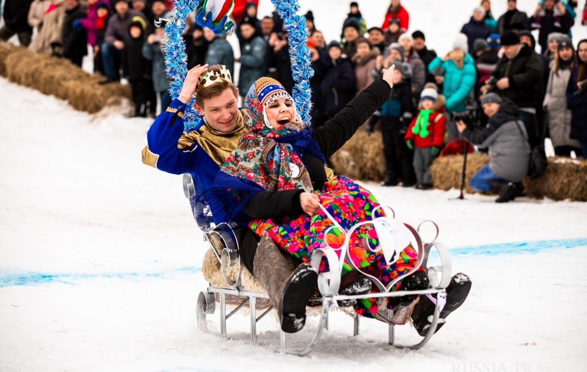
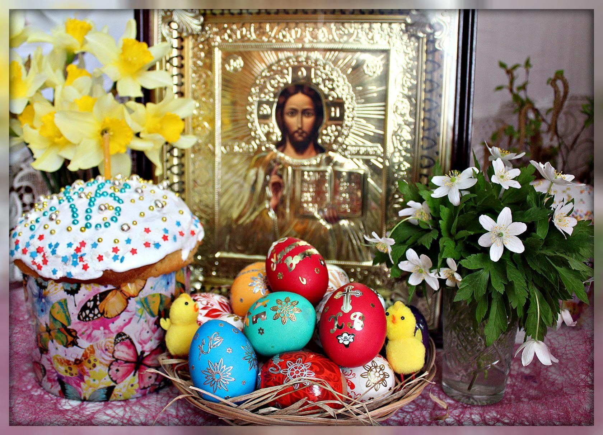
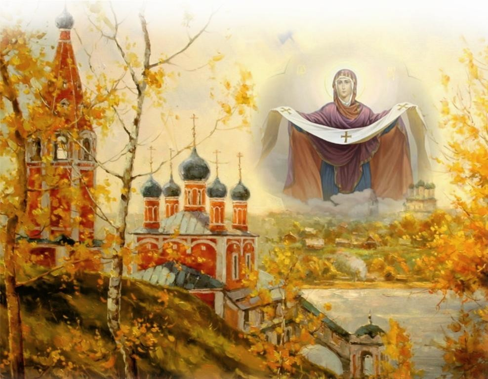

Справка
В бытности народов республики Мордовии существует традиционная основа, которая
сочетает в себе элементы кочевого и сельского образа жизни. Важное место занимают
обряды, традиции и обычаи, передаваемые из поколения в поколение. Народы
Мордовии отличаются гостеприимством, любовью к природе и трудолюбием.
Традиционные национальные костюмы, украшения и ритуалы играют значительную
роль в повседневной жизни местных жителей. Важными аспектами бытности также
являются традиционная мордовская кухня, ремесла и народные промыслы.
Традиции
Маслиница

На Масленицу парни предлагали девушке,
которая им нравилась, прокатиться
на саночках
Пасха

На Пасху люди вспоминают о покойных,
просят у них счастья и долголетия.
Покров день

В октябре отмечали Покров день.
В эту дату проводили ритуал под названием
«покров баба»
Факты
-
Мордовия расположена ближе к Москве, чем любая другая российская
республика. По прямой до столицы всего 330 километров
-
Коренное мордовское население – мордва. Оно считается одним из самых
древнейших на территории России
-
Подавляющее большинство жителей Мордовии исповедует христианство, но
никогда не отказывались и от древних языческих верованиях. Поэтому
христианство с язычеством здесь сплелись в причудливые формы
-
Столица Саранск была признана самым благоустроенным городом России в 2011
году. А в 2018 в городе прошли некоторые матчи чемпионата мира по футболу
-
Уровень преступности в Мордовии вдвое ниже, чем по России. В то же время тут
расположено довольно много тюрем, колоний–поселений и прочих
исправительных учреждений